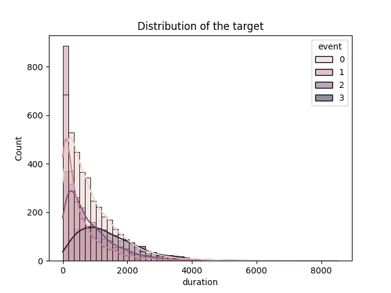
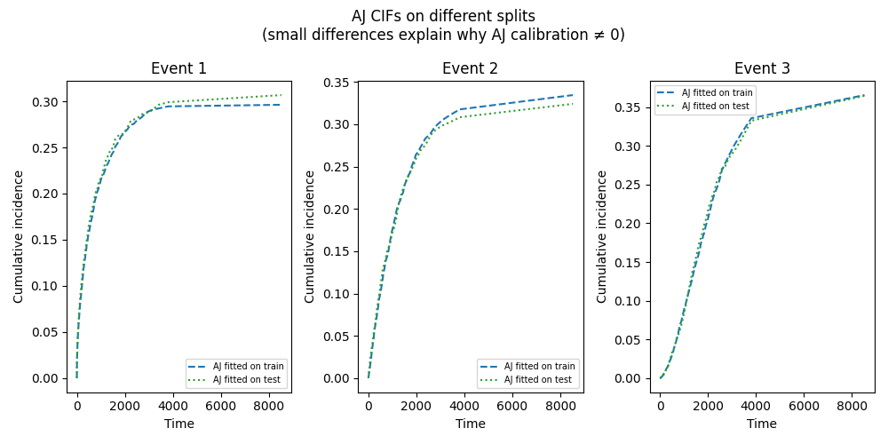
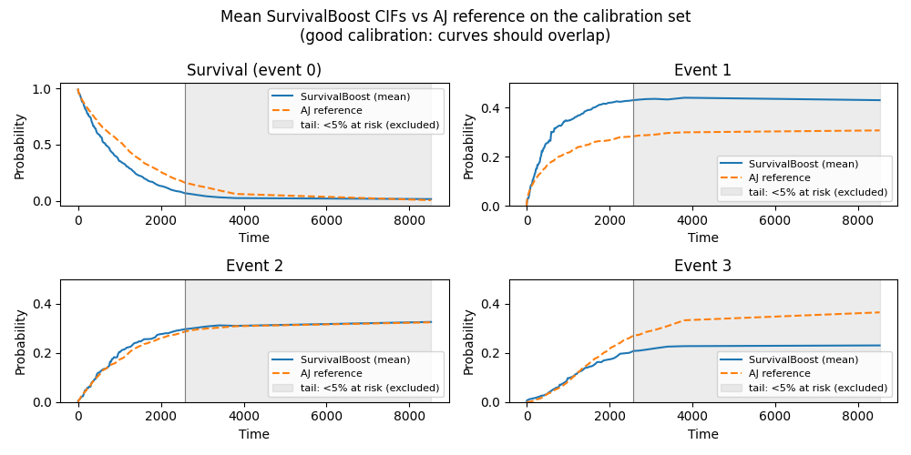
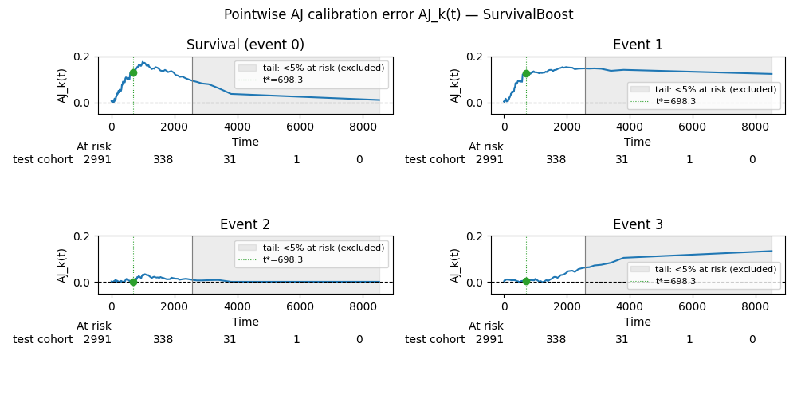

Note
Go to the end to download the full example code.
Calibration of survival models with competing risks#
A model is calibrated when its predicted probabilities match the observed frequencies of events: among individuals predicted to have a 20% risk, about 20% should actually experience the event. Marginal calibration is the weakest form of this property, checking that predictions are correct on average across the whole cohort rather than for each individual.
In a competing risks setting, an individual can experience one of several mutually exclusive events (e.g. dying from different causes), and the quantity of interest is the cumulative incidence function (CIF) of each event over time. The Aalen-Johansen (AJ) estimator is the standard non-parametric estimator of these CIFs. AJ calibration uses it as a ground-truth reference: a model is marginally calibrated if its mean predicted CIF matches the AJ estimate fitted on the same cohort. The AJ calibration metric quantifies the gap between the two, with a score of zero indicating perfect marginal calibration. See [Alberge2026] for details.
In this example, we illustrate how the Aalen-Johansen calibration metric works. The Aalen-Johansen (AJ) calibration metric measures marginal calibration of a survival model in the presence of competing risks. It compares the mean predicted cumulative incidence function (CIF) against the non-parametric AJ estimator fitted on the evaluation cohort.
We demonstrate:
The AJ estimator itself as a calibrated baseline.
Why the AJ estimator does not achieve exactly zero calibration error when evaluated on a different data split.
SurvivalBoost as a model with individual-level predictions.
The three granularities of the metric:
aj_calibration(),aj_calibration_per_event(), andaj_calibration_at_t().
J. Alberge, T. Haugomat, G.Varoquaux,J. Abecassis, “On the calibration of survival models with competing risks”, AISTATS 2026. <https://arxiv.org/pdf/2602.00194>
import numpy as np
from matplotlib import pyplot as plt
import seaborn as sns
from sklearn.model_selection import train_test_split
import warnings
from lifelines import KaplanMeierFitter
from lifelines.plotting import add_at_risk_counts
from hazardous.utils import make_time_grid
from hazardous._km_sampler import _AalenJohansenSampler
from hazardous._survival_boost import SurvivalBoost
from hazardous.data._competing_weibull import make_synthetic_competing_weibull
from hazardous.metrics import (
aj_calibration,
aj_calibration_at_t,
aj_calibration_per_event,
)
# lifelines' AalenJohansenFitter warns and randomly jitters whenever it finds
# tied event times. Silence that specific warning to keep the output clean.
warnings.filterwarnings("ignore", message="Tied event times were detected")
Generation of one synthetic dataset with 3 competing events, and display of the distribution of the target.
n_samples = 10_000
n_events = 3
X, y = make_synthetic_competing_weibull(
n_samples=n_samples,
return_X_y=True,
n_events=n_events,
censoring_relative_scale=1.5,
random_state=0,
)
sns.histplot(y, x="duration", hue="event", bins=50, kde=True)
plt.title("Distribution of the target")
plt.show()

Data splits: train / test. The model is fitted on the train set, and the calibration is measured on the test set.
X_train, X_test, y_train, y_test = train_test_split(X, y, random_state=0, test_size=0.3)
# Common time grid used throughout this example.
times = make_time_grid(
event=y_train["event"], duration=y_train["duration"], n_time_grid_steps=100
)
# In the tail of the time grid only a handful of subjects are still at risk, so
# the Aalen-Johansen reference - and therefore the calibration error - becomes
# pure noise there. The AJ-calibration metric integrates only up to the time
# where fewer than ``min_prop_at_risk`` of the cohort remains at risk (5% by
# default). We compute that cutoff time here to highlight it in the plots below.
min_prop_at_risk = 0.05
prop_at_risk = (np.asarray(y_test["duration"])[:, None] >= times[None, :]).mean(axis=0)
t_cut = times[prop_at_risk >= min_prop_at_risk][-1]
AJ estimator as a calibrated baseline.#
The AJ estimator is a marginal model: it predicts the same CIF for every individual. Fitting on the training set and evaluating on the test set gives a calibration score close (but not exactly equal) to zero.
aalen_sampler = _AalenJohansenSampler().fit(y_train)
incidence_funcs_aj = dict(aalen_sampler.incidence_func_)
incidence_funcs_aj[0] = aalen_sampler.survival_func_
def _aj_predictions(sampler_funcs, n_samples, n_events, times):
"""
Broadcast marginal AJ predictions to shape
(n_samples, n_events+1, n_times).
"""
preds = np.array(
[np.tile(sampler_funcs[i](times), (n_samples, 1)) for i in range(n_events + 1)]
)
return preds.transpose(1, 0, 2) # (n_samples, n_events+1, n_times)
inc_probs_aj_test = _aj_predictions(incidence_funcs_aj, len(y_test), n_events, times)
aj_cal_test = aj_calibration(y_test, times, inc_probs_aj_test)
print(f"AJ calibration score (test set): {aj_cal_test:.6f}")
AJ calibration score (test set): 0.000055
Why does the AJ estimator have a non-zero calibration score?#
The AJ calibration metric compares the mean predicted CIF against the AJ estimator on the test set. When the model is itself the AJ fitted on the training set, its predictions are the AJ CIFs from y_train. The reference inside the metric is the AJ fitted on y_test. These two AJ estimates are obtained on different random splits and therefore differ slightly due to sampling variability. This produces a small but non-zero calibration error, even though the model is theoretically marginally calibrated.
The plot below shows the AJ CIF on the three splits for each event: they are close but not identical, which explains the residual score.
aj_test_sampler = _AalenJohansenSampler().fit(y_test)
fig, axes = plt.subplots(ncols=n_events, nrows=1, figsize=(10, 5), sharey=False)
fig.suptitle(
"AJ CIFs on different splits\n(small differences explain why AJ calibration ≠ 0)"
)
for event_id in range(1, n_events + 1):
ax = axes[event_id - 1]
ax.plot(
times,
incidence_funcs_aj[event_id](times),
label="AJ fitted on train",
linestyle="--",
color="C0",
)
ax.plot(
times,
aj_test_sampler.incidence_func_[event_id](times),
label="AJ fitted on test",
linestyle=":",
color="C2",
)
ax.set_title(f"Event {event_id}" if event_id != 0 else "Survival (event 0)")
ax.set_xlabel("Time")
ax.set_ylabel("Cumulative incidence" if event_id != 0 else "Survival probability")
ax.legend(fontsize=7)
plt.tight_layout()
plt.show()

SurvivalBoost produces individual-level CIF predictions, so its mean prediction can deviate from the marginal AJ reference, reflecting whether the model’s is well-calibrated marginally.
survivalboost = SurvivalBoost(n_iter=50, show_progressbar=False, random_state=0)
survivalboost.fit(X_train, y_train)
# Predictions on the calibration cohort — shape (n_test, n_events+1, n_times)
inc_probs_sb = survivalboost.predict_cumulative_incidence(X_test, times=times)
Comparing mean SurvivalBoost predictions against the AJ reference.#
A well-calibrated model has its mean CIF close to the non-parametric AJ.
aj_ref = {
0: aj_test_sampler.survival_func_(times),
**{k: aj_test_sampler.incidence_func_[k](times) for k in range(1, n_events + 1)},
}
fig, axes = plt.subplots(ncols=(n_events + 1) // 2, nrows=2, figsize=(10, 5))
fig.suptitle(
"Mean SurvivalBoost CIFs vs AJ reference on the calibration set\n"
"(good calibration: curves should overlap)"
)
for event_id in range(n_events + 1):
ax = axes[event_id // 2, event_id % 2]
mean_sb = inc_probs_sb[:, event_id, :].mean(axis=0)
ax.plot(times, mean_sb, label="SurvivalBoost (mean)", color="C0")
ax.plot(times, aj_ref[event_id], label="AJ reference", linestyle="--", color="C1")
ax.axvspan(
t_cut, times[-1], color="grey", alpha=0.15, label="tail: <5% at risk (excluded)"
)
ax.axvline(t_cut, color="grey", linewidth=0.8, linestyle="-")
ax.set_title(f"{'Survival (event 0)' if event_id == 0 else f'Event {event_id}'}")
ax.set_xlabel("Time")
if event_id != 0:
ax.set_ylim(0, 0.5)
ax.set_ylabel("Probability")
ax.legend(fontsize=8)
plt.tight_layout()
plt.show()

AJ calibration at three levels of granularity.#
The AJ calibration metric can be computed at three levels of granularity:
aj_calibration: single scalar score aggregated across all events.aj_calibration_per_event: one scalar score per event, before aggregation.
3. aj_calibration_at_t: pointwise difference \(\delta_k(t)\) at a single
time point.
By default the score integrates only up to the time where 5% of the cohort is
still at risk. Because the time grid is quantile-spaced, the few tail points
span most of the time axis and carry large weight in the integral. For events
whose error is concentrated in that tail (e.g. event 3), integrating over the
full grid (min_prop_at_risk=0) lets small-sample noise dominate and
inflates the score; truncation removes that contribution. Where the model is
genuinely miscalibrated in the data-rich region (e.g. event 0), truncation
does not hide it.
1 — Overall score (mean across events by default)
score_overall = aj_calibration(y_test, times, inc_probs_sb)
print(f"\n[aj_calibration] overall score (mean): {score_overall:.6f}")
score_sum = aj_calibration(y_test, times, inc_probs_sb, reduction="sum")
print(f"[aj_calibration] overall score (sum): {score_sum:.6f}")
[aj_calibration] overall score (mean): 0.008065
[aj_calibration] overall score (sum): 0.032259
2 — Per-event scores
scores_per_event = aj_calibration_per_event(y_test, times, inc_probs_sb) # default 5%
scores_full_grid = aj_calibration_per_event(
y_test, times, inc_probs_sb, min_prop_at_risk=0
)
print("\n[aj_calibration_per_event] scores (truncated at 5% at risk vs full grid):")
for event_id in scores_per_event:
print(
f" Event {event_id}: {scores_per_event[event_id]:.6f} "
f"(full grid: {scores_full_grid[event_id]:.6f})"
)
# Score for event 1 only
score_event1 = aj_calibration_per_event(
y_test, times, inc_probs_sb, event_of_interest=1
)
print(f"\n[aj_calibration_per_event] event_of_interest=1: {score_event1:.6f}")
# 3 — Pointwise differences at a single time point
t_star = np.median(times) # example time point
t_star_idx = np.argmin(
np.abs(times - t_star)
) # index of closest time point in the array
diffs_at_t_star = aj_calibration_at_t(
y_test,
times[[t_star_idx]],
inc_probs_sb[:, :, t_star_idx : t_star_idx + 1],
)
print(f"\n[aj_calibration_at_t] pointwise δ_k at t={t_star:.2f}:")
for event_id, diff in diffs_at_t_star.items():
print(f" Event {event_id}: {diff[0]:.4f}")
# Alternatively, retrieve differences over all times and index manually
diffs_all = aj_calibration_at_t(y_test, times, inc_probs_sb)
print("[aj_calibration_at_t] same values via full-time array indexing:")
for event_id, diff in diffs_all.items():
print(f" Event {event_id} at t={t_star:.2f}: {diff[t_star_idx]:.4f}")
[aj_calibration_per_event] scores (truncated at 5% at risk vs full grid):
Event 0: 0.015404 (full grid: 0.005797)
Event 1: 0.015776 (full grid: 0.017372)
Event 2: 0.000274 (full grid: 0.000093)
Event 3: 0.000805 (full grid: 0.009273)
[aj_calibration_per_event] event_of_interest=1: 0.015776
[aj_calibration_at_t] pointwise δ_k at t=698.29:
Event 0: 0.1303
Event 1: 0.1255
Event 2: 0.0000
Event 3: 0.0052
[aj_calibration_at_t] same values via full-time array indexing:
Event 0 at t=698.29: 0.1303
Event 1 at t=698.29: 0.1255
Event 2 at t=698.29: 0.0000
Event 3 at t=698.29: 0.0052
Visualizing the pointwise calibration error for SurvivalBoost.#
Values close to zero indicate good marginal calibration at that time point. One way to understand if the calibration errors are close enough to zero may be to compare them to the AJ calibration error of the AJ estimator itself, which is a marginally calibrated model by construction.
For events 1 and 3 the error grows in the shaded tail: the “number at risk”
row below each panel (drawn with lifelines’ add_at_risk_counts) shows that
only a handful of subjects remain there, so the comparison is dominated by
sampling noise rather than genuine miscalibration. This is exactly the region
excluded by min_prop_at_risk when computing the integrated score. Event 0,
in contrast, is off even where data is plentiful, so its error is a real
calibration problem that truncation does not remove.
# Kaplan-Meier on the test set, used only to render the at-risk counts.
kmf = KaplanMeierFitter(label="test cohort").fit(
np.asarray(y_test["duration"]), np.asarray(y_test["event"]) > 0
)
fig, axes = plt.subplots(ncols=(n_events + 1) // 2, nrows=2, figsize=(10, 5))
fig.suptitle("Pointwise AJ calibration error AJ_k(t) — SurvivalBoost")
for event_id, diff in diffs_all.items():
ax = axes[event_id // 2, event_id % 2]
ax.plot(times, diff, color="C0")
ax.axhline(0, color="black", linewidth=0.8, linestyle="--")
ax.axvspan(
t_cut, times[-1], color="grey", alpha=0.15, label="tail: <5% at risk (excluded)"
)
ax.axvline(t_cut, color="grey", linewidth=0.8, linestyle="-")
ax.axvline(
t_star, color="C2", linewidth=0.8, linestyle=":", label=f"t*={t_star:.1f}"
)
ax.scatter([t_star], [diff[t_star_idx]], color="C2", zorder=5)
ax.set_title(f"{'Survival (event 0)' if event_id == 0 else f'Event {event_id}'}")
ax.set_xlabel("Time")
ax.set_ylabel("AJ_k(t)")
ax.set_ylim(-0.05, 0.2)
ax.legend(fontsize=8)
add_at_risk_counts(kmf, ax=ax, rows_to_show=["At risk"])
plt.tight_layout()
plt.show()

Total running time of the script: (0 minutes 13.990 seconds)